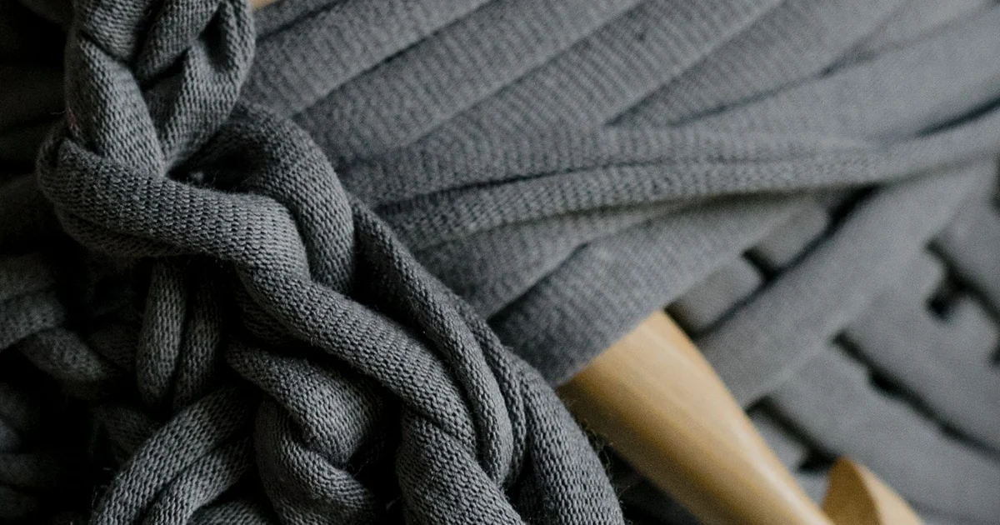
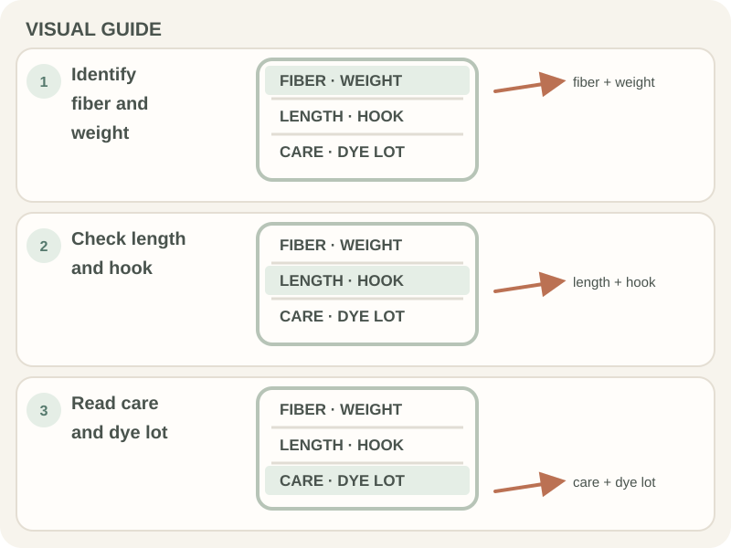

Tools, Yarn & Materials · Beginner guide
How to Read a Yarn Label for Crochet
A yarn label tells you the fiber, weight, yardage, care directions, and suggested hook range to help match yarn to a project.

Read the label before you start, especially when buying several skeins or substituting yarn. Suggested hook sizes are a starting point; follow pattern gauge for a sized item.
Before you begin
Keep the label until the project is complete. Record the brand, color name, dye-lot number, and care directions in case you need more yarn later.
Step-by-step instructions
- Find the fiber-content and yarn-weight information.
- Check the yardage or length, not only the skein weight, when estimating quantity.
- Note the suggested hook size and care instructions; compare them with the pattern.
- For multiple skeins, check that color names and dye-lot numbers match.

How to check your work
You should be able to identify the fiber, category, amount, hook suggestion, and care directions. Use the pattern’s gauge and materials as the final project guide.
Common beginner problems
- The label lists grams but not yards prominently: Look for the length information; equal mass does not mean equal yardage across fibers.
- Care symbols are unfamiliar: Use the label’s written care key or manufacturer information; do not assume all fibers tolerate heat.
- Labels from two skeins differ: Check dye lot and color name before combining them in visible sections.
What to save
Keep a label or photograph it before discarding. The fiber, color, lot, and care details are useful for repairs and washing later. For hook-size and weight ranges, compare the Craft Yarn Council yarn standards.
Frequently asked questions
What is a dye lot?
A dye lot identifies a production batch. Different lots can have visible shade variation.
Does the suggested hook guarantee gauge?
No. It is a starting point; compare a swatch with the pattern gauge.
Why check yardage instead of skein weight?
Different fibers and yarns can give different lengths for the same mass.